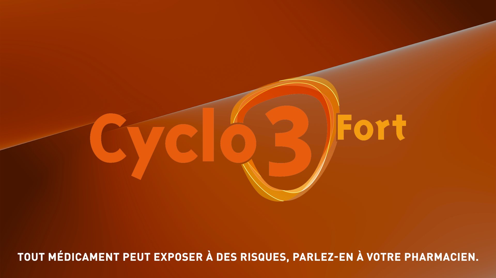
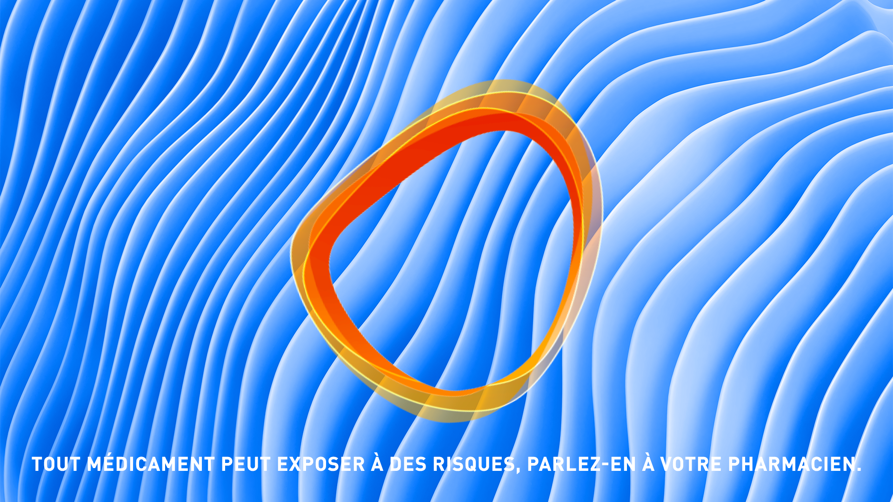
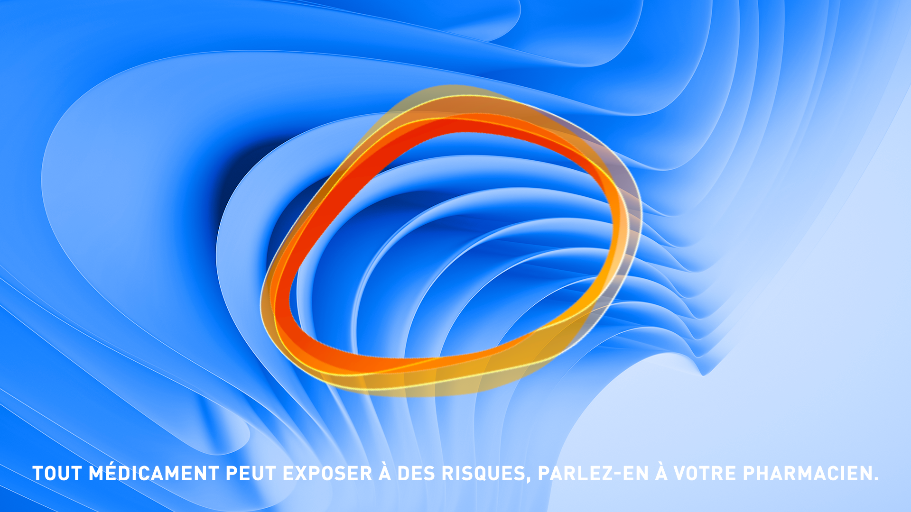
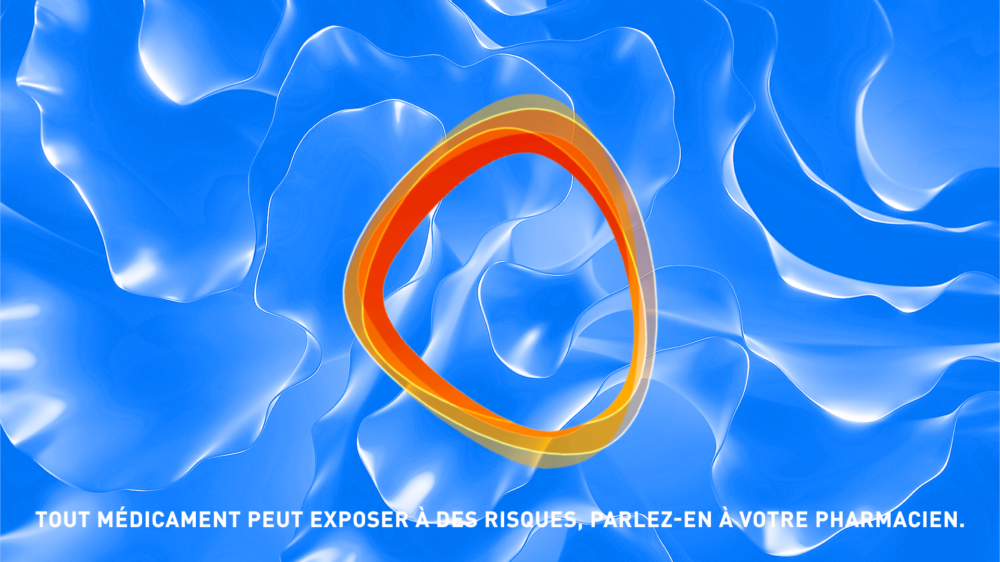
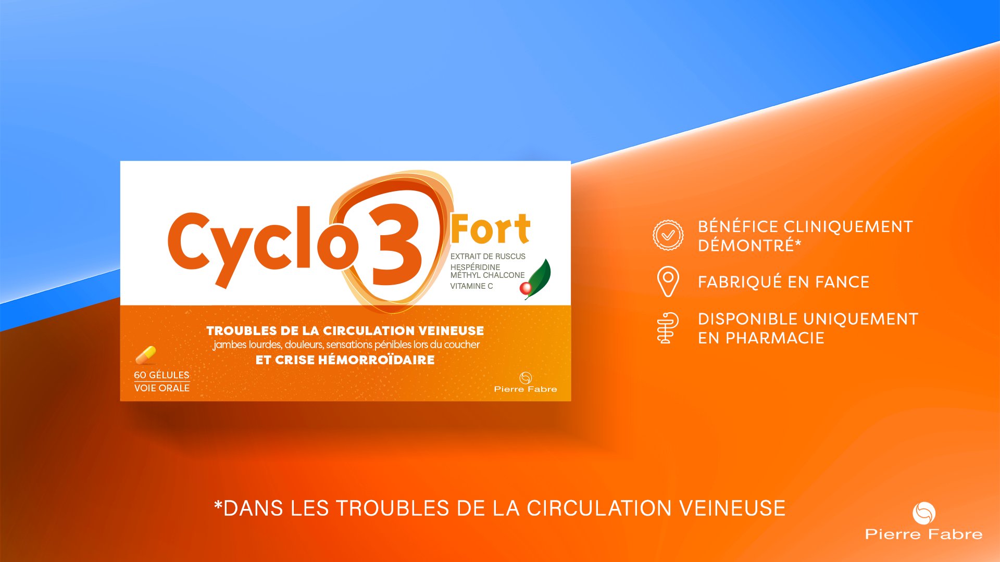
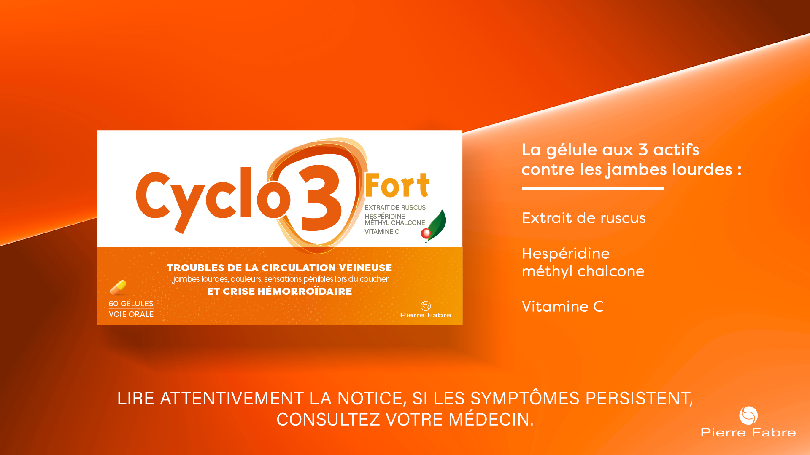
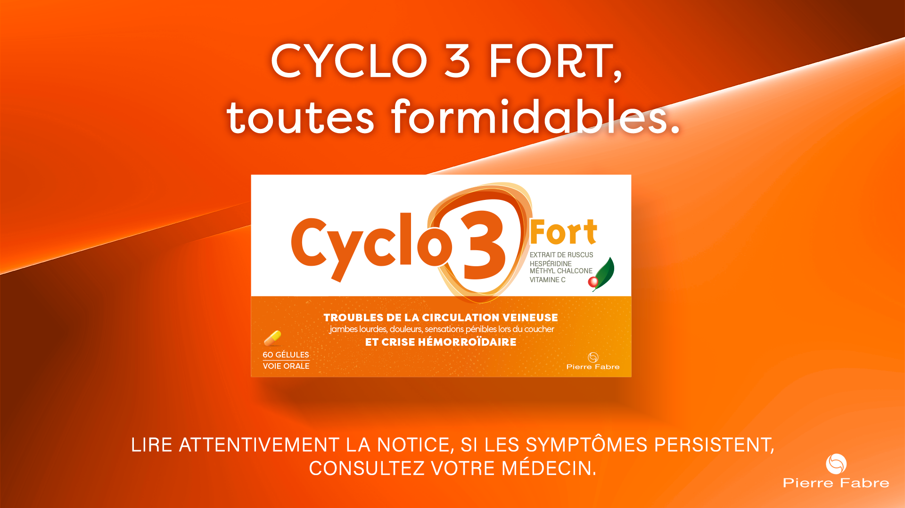

Cyclo 3 Fort — Film — Appel d’offres — Non remporté
Ode à nos jambes
Prompt : Un spot TV mettant en avant notre produit, Cyclo 3 Fort, un veinotonique commercialisé par Pierre Fabre. Le produit aide à vaincre les sensations d’inconfort et de jambes lourdes.







Nous avons voulu aborder ce sujet d’une manière non traditionnelle pour faire connaître le produit au grand public. En France, un grand nombre de femmes souffrent d’insuffisance veineuse mais ne se traitent pas, c’est pourquoi nous voulons faire de la prévention.
Notre concept consiste à créer une hymne à la femme à travers un poème ou un slam, pour exprimer notre soutien et notre reconnaissance envers elles. Nous souhaitons affirmer notre engagement à leurs côtés, en célébrant leur force et leur résilience dans le monde actuel. En reprenant des mots contenant le son FORT, nous rappelons le nom de Cyclo 3 Fort mais nous mettons également en avant la force des femmes dans cette ode à la féminité.
VO : "À celles qui disent non à l'inconfort,"
VO : "qui cherchent un cocon de réconfort."
VO : "qui ne veulent pas subir l’inconfort"
VO : "dès le premier effort."
VO : "pour celles dont les jambes déclarent forfait,"
VO : "existe une formule au triple effet."
VO : "À celles qui ont choisi le confort"
VO : "et appellent au renfort."
VO : "La solution, forcément, c’est Cyclo 3 Fort."
VO : "Cyclo 3 Fort, toutes formidables."